InDesign is Adobe’s prepress, page layout application. It’s intended for the design and production of magazines, books, and other print pieces. It includes some XML support, so it’s forward looking to the time when much of our documents will be data driven (instead of design once, print many, design again print again)
Many of the tools InDesign employs to speed along print design can be used in the creation of schematics and prototypes of your web site projects.
Many of the same kinds of features exist in other pre-press applications like Quark Express and Adobe Pagemaker. The same concepts should apply in general, though InDesign’s PDF workflow provides some advantages over other applications.
What makes a good web site prototype?
Prototypes (or “schematics,” or “wire frames”) for web sites help to determine and communicate three elements of a new web site.
- Basic structure
- The basic structure of a web page includes the major divisions of content and function.
- Basic Function
- A web site prototype will help communicate the major steps that a user takes to complete a particular task e.g. adding an item to a shopping cart or searching for content.
- Basic Layout or Design
- Basic design or layout means the foundational or structural design of each page. This includes navigation, page divisions (e.g. content here, sub navigation here), the layout of form fields, the layout of dynamic or templated content (e.g. product image goes here). This does not mean typeface choice, color choices, graphic design, or page styling. These things come second after the structure, just like you build the foundation for your house before you pick out the carpet.
This isn’t to say that graphic design and styling is not important. It is very important to communicating brand or corporate identity, and contributes quite a lot to the usability and pleasure of using a web site. However, your web site should function without color, graphics, and fancy styling, just like your house would function without drapes.
Good prototypes should also have the following characteristics:
- Black and White.
- Prototypes, at least in the beginning should focus on form and function. Graphics, styling, or a lot of color will only distract from the form and function. (if you were to color code navigational areas say, blue and content areas yellow, you will inevitably have a client or member of your marketing team ask “can’t we make that red or some other color?” While in black and white everyone will (hopefully) understand it’s a plan or blueprint, not a suggestion for visual design.)
- Scribble-able
- A good prototype should be printable and passed out to members of the development team during meetings for people to make notes, doodle in extra features if needed. If during the course of your meetings you discover that you need a new link on the home page, you can simply write it in. These notes can be photocopied and passed back to the developers to include in the next round of prototyping. Printable documents can be read anywhere, don’t require a network connection, and don’t suffer from computer glitches or network downtime.
Why prototype using InDesign or paper instead of HTML?
An HTML wiz-kid could bang out a good prototype by hand-coding or in Dreamweaver pretty quickly, maybe even faster than you could with InDesign or a similar application.
The problem is once you start working with HTML and viewing the results of the work in a browser, you are no longer prototyping, but working on a web page.
In order to make the navigation consistent in all pages the web designer or developer will start writing includes, or making templates, therefore deviating from dealing in general concepts.
The purpose of prototyping is to plan and develop ideas and concepts, not to fidget with HTML.
Also an HTML prototype requires a computer and a browser to really work properly. It will only print properly if your web developer spends time making printable version.
I’m obviously referring to the early phases of design and planning. At some point there will obviously have to be a development web site available for testing and critique. By that point however, all the big questions of design, format, and structure should be answered.
Other benefits to InDesign
InDesign can export to PDF format and to HTML. This gives you options in how you present your prototype.
This means you can show your prototype over the web with working links, within Adobe Acrobat also with working links, or printed from the exported PDF for round-table discussion. More options is always better.
InDesign’s HTML export is a complicated animal. For quick exporting of prototypes for use in meetings or getting feedback it should work fine, though I wouldn’t recommend it for any HTML production without really learning the ins and outs of the export tool.
Once the initial phase of prototyping is completed, the InDesign document can be passed to a graphic designer who can add visual design and styling to the prototype. Using master pages will propagate theses changes throughout the prototype quickly. Starting with a single structural prototype, the designer can easily create a few different looks quickly based on the same structure.
Now the “full” paper prototype with visual design can be viewed on screen, or in print for design discussions and development.
In this way a “low-fidelity” prototype can quickly become a “high-fidelity” prototype complete with graphics, type, and styling.
Methods for Prototyping in Adobe InDesign
Your InDesign prototype should begin with a new document. Set your page setup to “landscape.” This will mimic the horizontal format of the screen, but still print easily on standard paper.
I usually set my Units to points, which are roughly analogous to pixels. This helps to ground the design in the proper framework more than providing a pixel perfect layout solution.
For the sake of this article I have started a simple prototype of a blogging tool built for my hypothetical friend Billy. The sample includes a blog entry screen and a blog preferences screen. Just enough to illustrate the concepts.
Tools of the trade
In order to make prototyping fast and productive, it helps to not have to recreate standard browser widgets every time you need to add a text field.
I’ve developed a set of generic user interface widgets that you might find in any HTML form.
Included in this set are a search form, and a “jump menu” as those are common “widget clusters” that are used in web sites. The other form elements are there, checkboxes, radio buttons, text fields, menus, etc.
A library in InDesign is a collection of vector art (“geometry”), images, text, or whatever objects you might want to reuse. The library is a discreet file, and can be opened and used with several InDesign documents.
I’ve placed these standard UI widgets into an InDesign Library for easy use. Simply click and drag the widget onto the page where needed. Rename buttons or menu items with the type tool. Reshape as needed.
The widgets themselves are all vector art. This allows them to scale to whatever size you need. It also means not having to keep up with a bunch of bit mapped images for prototyping.
I’ve bundled the UI Widget library along with an Illustrator EPS file, and a standard Illustrator document into a ZIP archive for easy use. If you don’t use InDesign, you should be able to extract the widgets from either of the Illustrator files.
Getting Started
Once you have created a new document, you will want to establish your default settings for link color and text.
Bring up the Swatches pallette from the Window menu (Window -> Swatches) or via the F5 key. Click the new swatch icon (small page) at the lower right of the pallette next to the trash can icon.
You may wish to pick from the Web Color pallette for a web safe text color.
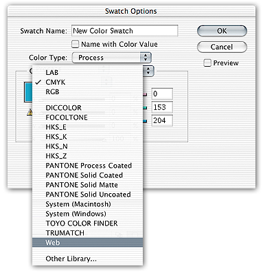
Choose at least one color for your basic hyperlink text. You probably won’t need more than one link color. Remember, your job here is to show what and where the links are, you aren’t styling the page.
With a link color chosen, bring up the Character Styles pallette from the Type menu (Type->Character Styles) or by pressing Shift and F11.
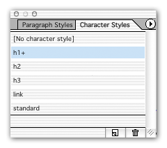
Click the page icon to create a new character style.
A character style is a set of named typeface settings. You can choose your typeface, size, color, style (underlined, bold, etc).
I made a character style for Headings level 1 through 3, a “standard” character style for all paragraph and body copy. And a “link” character style using the color I created above, with the type style set to underlined.
You may wish to add other type styles if your prototype demands them. Try and keep your type styles limited to semantic definitions. Headings, lists, paragraphs, abbreviations, address, etc. You want to avoid fussing with visual style at this stage.
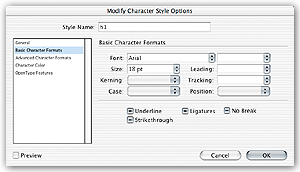
I recommend using a simple typeface like Arial or Helvetica. It will be easy to read, and will not imply a specific design direction to heavily.
Using Master Pages
Most web sites use a standardized framework (or “chrome”) for placing the navigational elements, corporate identity, etc.
This framework should be built on the first master page (A-Master) in InDesign. All elements on the master page will be automatically copied to each page that has the master “applied” to it.
Bring up the pages pallette from the Window menu, if it isn’t already available (Window -> Pages) or by the F12 key.
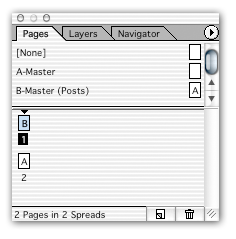
From the pages pallette you can create edit master pages, create new master pages, and create and reorder document pages.
Double click A-Master to open it in the document window.
Create all of your web site “chrome” here, including global navigation links (links that will be used and accessible throughout your site).
Our sample looks like this:

Notice the global links “Posts,” “Links,” and “Archives.” These links will appear on every page made from the A-Master.
Try editing this page in the sample document. You will notice that every page in the document reflects your changes. Handy.
To create a new page in the prototype based on this master page, click on the Master in the top half of the pages pallette, and drag it down into the bottom half. You can drag it to the end of your list of pages to make a new page at the end of the document, or drag it some place in between.
Master pages and sub-sections
Any complex web site will have many sections of content, often times with their own sub-navigation. A product catalog is a good example.
Again, using a master page for this can prevent you from copying and pasting a sub-navigation design to 12 different pages.
The trick is to create a master page based on the first master page. This way the global links and browser chrome are copied into the new master page, and therefore copied into any pages made with the new master page.
To make a new master page, click the triangle in the upper right corner of the pages pallette to open an options menu.
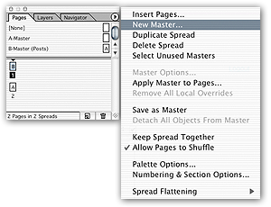
Choose “New Master” from the menu.
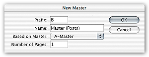
Name the new master something relevant to the purpose of the section (like “Products Master” for a product page master). On the menu labeled “Based On Master” choose the A-Master page.
Add any new section elements to this new master (sub-navigation, bread crumb trail navigation, headings, etc). Use this master just like the original master page, dragging it from the top half of the pallette to the bottom half to make a new page.
Linking
InDesign supports hyperlinking within documents as well as links to web addresses. These links are maintained when you export the document to PDF or to HTML and clickable. This means that someone looking at your prototype in a browser or in Acrobat can get a sense of how the site “flows” and what happens after you submit which form.
You need a place to link to
It is less confusing to build the destinations of your links in InDesign first, then create your links.
You may want to create all the pages in your prototype at once, and then create links. Or work on links incrementally as you complete a page or section.
Once you have a page that will be a destination for a link. You will set it as a hyperlink destination.
Bring up the Hyperlinks pallette from the Window menu (Window->Hyperlinks) or by pressing Shift and F7.
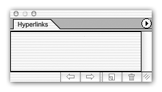
Click the triangle in the upper right corner of the pallette to open the options menu. Choose “New Hyperlink Destination.”
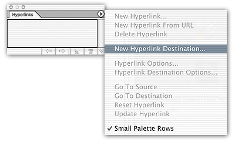
Set the type of your new hyperlink destination to “Page.” Give the destination a recognizable name such as an abbreviation of the page you are linking to (you will need this to tell one link destination from another later).
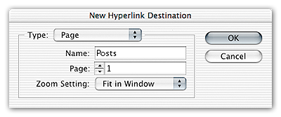
Make sure the Page number matches the number of the page you are linking to.
Set the “Zoom Setting” to “Fit In Window” to have each page zoom out to fit the screen in Acrobat after the link is clicked.
Making a new link
Once you have a link destination, you can make a link.
Select the object or text that will function as the link.
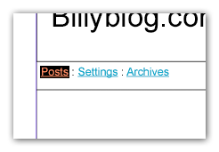
Click the page icon on the Hyperlinks pallette to create a new link.
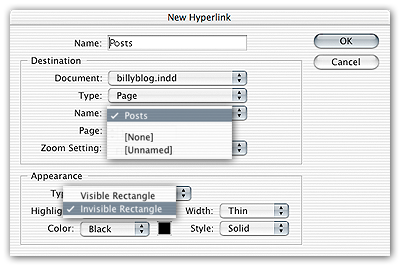
Give the link a name to identify it on the Hyperlinks Pallette. You can double-click on any link listed on the pallette to edit.
Choose the hyperlink destination from the “Name” menu. Set the Type to “Invisible Rectangle” (otherwise your hyperlinks will have big ugly boxes around them). Make sure the type is set to “Page.”
If you make a link on a Master page, that link will be copied to every page which uses that master.
PDF Exporting
When you’ve finished with your prototype, or you’ve done enough that you want to print it out and look it over, you will want to export it as a PDF.
Choose “Export” from the file menu.
Select “General” from the left hand pane. Select a PDF Style from the menu. I’ve found the eBook settings to work well.
Make sure the “Include Hyperlinks” checkbox is checked in order to keep your links in the PDF.
Click Export and save your PDF file.
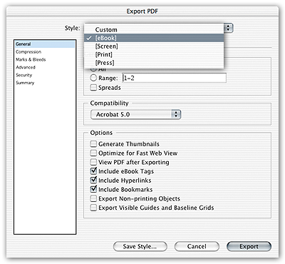
Final thoughts
I prefer exporting to PDF as it is more versatile. You can print it, email it, and it’s all contained in one editable file. Designers could crack it open in Acrobat and tweak if they wanted, or work with the original file.
HTML output is also an option. I find it less useful as it immediately ties the prototype to a browser and will not print as well without crafting printer friendly styles.
Prototypes should be tools for structuring a project, figuring out what goes where and who comes first, and finally for spotting potential problems before they become coded into HTML, integrated into a server side scripting language and tied into a database.
InDesign™ is a registered trademark of Adobe®.